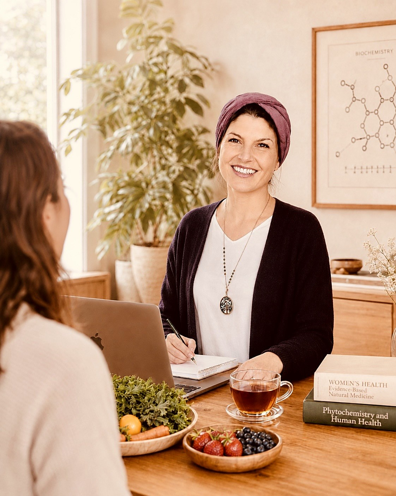
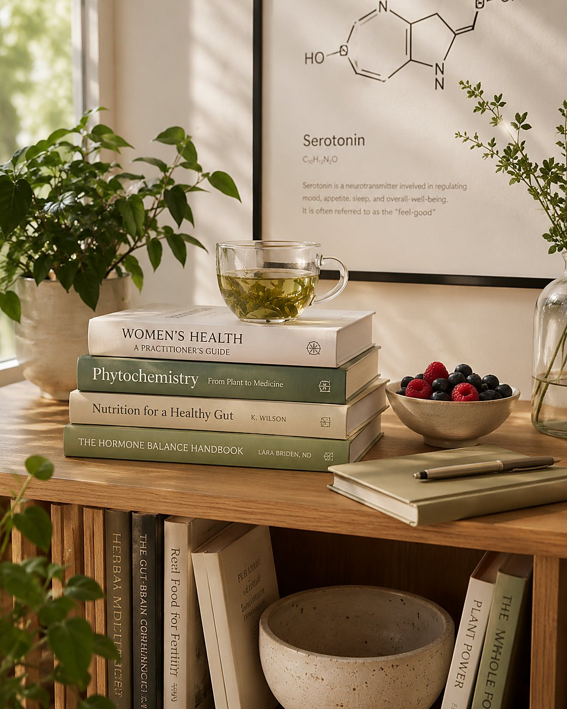
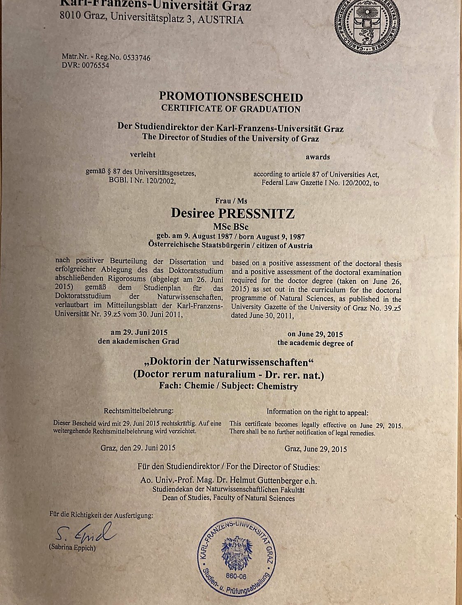
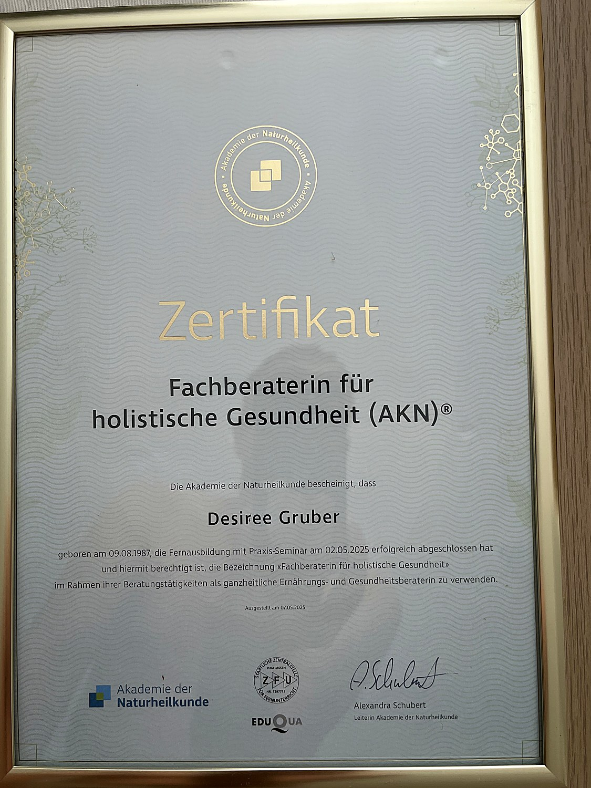
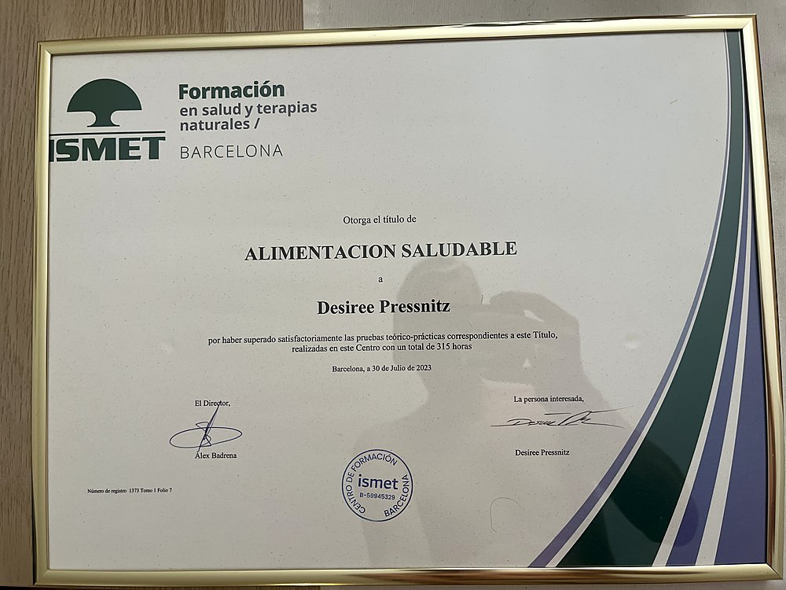

Listen
A deep intake of your history, symptoms and goals — the science of you starts with being heard.
Academically-founded holistic health coaching: doctoral-level rigour, naturopathic care, a plan built around your body.
No pressure · Online, worldwide · EN / ES / DE

Most arrive exhausted by advice — every plan tried, yet still unheard.
Drained, despite doing "everything right."
Low energy, broken sleep, an afternoon crash.
Buried in contradictory information.
One source says fast, another graze — you're left guessing.
Seen for ten minutes, then sent away.
Bloodwork "normal," symptoms real — nobody joining the dots.
A new season your old habits don't fit.
Pregnancy, postpartum, a hormonal shift — the rules change.
The job isn't a diet. It's to feel like yourself again — clear-headed, energetic, at home in your body.— What clients actually want · the "job to be done"
Auralis Natura exists for that — turning your physiology and lifestyle into a do-able plan, walked together.
Real food, real physiology — a plan your body actually recognises.
Laboratory discipline brought to lifestyle change — every recommendation traced to you.
A deep intake of your history, symptoms and goals — the science of you starts with being heard.
A root-cause assessment of nutrition, stress, sleep and lifestyle.
Your personalised protocol — food, movement, supplements and rhythm — in one report.
Accountability and gentle iteration — adjusting as your body responds, until change feels natural.
Every journey begins with a free call. Then choose the depth that suits you — a single deep-dive or a guided programme.
A focused 90-minute deep-dive for one question, with your first report.
A structured kick-start to feel different in six weeks.
A complete guided journey to rebuild your energy from the root.
🔒 Secure checkout — powered by Stripe. By purchasing you agree to our Terms & Privacy.
Book a complimentary 25-minute discovery call — we'll talk through what's going on and whether Auralis fits.
Desiree holds specialist certification in women's health (Frauenheilkunde) — and lives it, with particular care for the seasons when the body rewrites the rules.
Nourishment and rhythm for where you are — restoring energy, steadying mood, building strength.
A doctorate in chemistry and a decade in pharmaceutical quality make rigour the baseline — claims get checked.
Naturopathic and nutritional training brings the whole person — food, rhythm, stress, sleep — into one plan.
Your plan arrives as a beautifully presented document — prepared with advanced tools, refined by Desiree.
Entirely online, in English, Spanish and German — care that follows you anywhere.
Specialist depth in fertility, pregnancy, postpartum and hormonal health — from someone walking it.
Coaching complements medical care, never replaces it. When something needs a physician, you'll be told plainly.

For ten years I held medicines to the highest quality standard. Then I wanted that rigour closer to home: how we feel each day.
I'm Desiree Gruber, with a doctorate (Dr. rer. nat.) in bioorganic chemistry with a decade in pharmaceutical quality, most recently leading global quality at Novartis. Precision and evidence are how I think.
But the body's science doesn't end at the lab door. Becoming a mother — and seeing how often people get generic advice for personal struggles — led me to train in holistic health and nutrition, with certification in women's health.
I built this practice to give people what I wanted for those I love: to be heard, taken seriously, given a plan that's truly theirs.
A doctorate in chemistry, plus accredited holistic-health and nutrition training. Swipe through the certificates.



The doctorate and earlier certificates were issued under the founder’s maiden name, Pressnitz.
A 25-minute conversation to understand your goals and see if we fit.
A guided questionnaire captures your history, symptoms and rhythms.
A personalised, evidence-based plan — reviewed and refined by Desiree.
A 1:1 session to walk the plan together and answer your questions.
Ongoing check-ins and gentle iteration until change becomes normal.
Sample testimonials (placeholders) — replace with verified client reviews from your 5-star follow-up.
For the first time someone explained why my digestion and energy were off — with real science — then a simple way to eat that actually fixed it. My afternoons are mine again.
I eat and train completely differently now — no fads, just what my body actually needs. I'm stronger in my workouts and lighter through the whole day.
I'm a sceptic by nature. What won me over: every change to my nutrition came with a reason. My digestion is calmer and my training has never been so consistent — no hype, just a plan that works.
Honest answers to the common questions. Still unsure? The free call is for this.
Ask me directlyLet’s begin with a calm, honest conversation.
One honest conversation about what's going on and whether Auralis fits.
Tell me about you; I'll reply within two working days.
By submitting you agree to be contacted about your enquiry. See our privacy policy. This is wellness coaching, not medical care.
Your request has reached Desiree — you'll hear back personally within two working days.